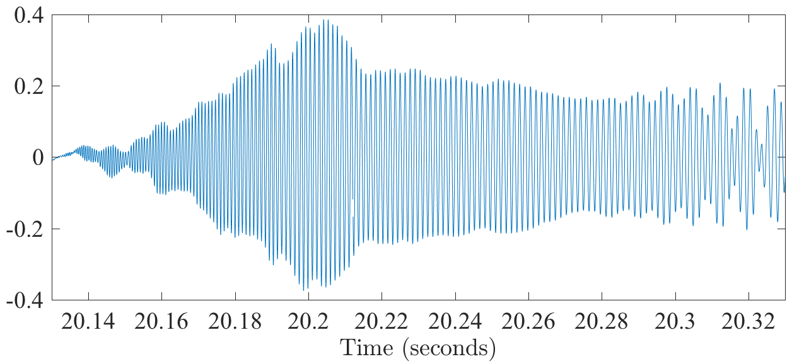
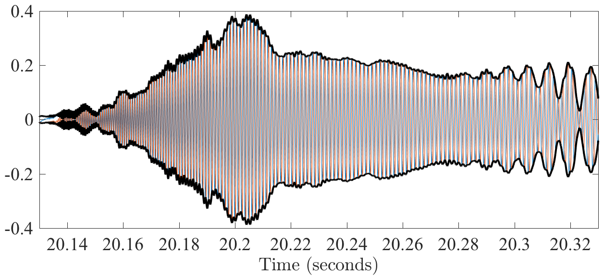
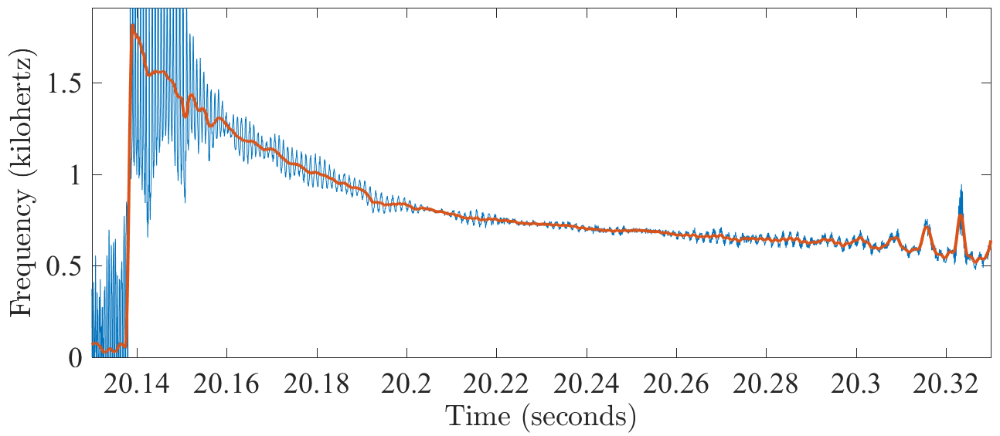

name: theanalyticsignal class: center,middle, .toc[[✧](../index.html)] .title[The Analytic Signal] --- class: left, .toc[[✧](../index.html)] #In-Class Assignments 1. With `$x$` being your *real-valued* data, set `$z=$`<tt>anatrans</tt>`$(x)$`. Look at `$z$`. Compare the <tt>fft</tt> of `$x$` with that of `$z$`. 2. Make a cosine the same length of your data and repeat step one. 3. Put a delta-function in the middle of an array of zeros having the same length as your data and repeat step one. 4. Create <tt>psi=morsewave(N,3,beta,f);</tt> with `$N$` being the length of your data. Here `$f$` is *radian* frequency assuming `$\Delta=1$`. Choose `$f$` so that you could see a cosine with this frequency given the length of your data. The choose several values of `$\beta>1/2$`, including `$\beta=3$`. Compare the different <tt>psi</tt>. 5. Look at the magnitude-squared <tt>fft</tt> of <tt>psi</tt> and verify that its peak lies at `$f$`, being careful to convert radian to cyclic frequencies. Compare the curves for different <tt>psi</tt> values. 6. Compute <tt>fs=morsespace(3,beta,N);</tt> for your choice of `$\beta>0$` followed by <tt>psi=morsewave(N,3,beta,fs);</tt> and then <tt>w=wavetrans(x,{3,beta,fs});</tt>. Plot this using <tt>wavespecplot(t,x,2*pi./fs,w);</tt> where <tt>t</tt> is the time axis. --- class: left, .toc[[✧](../index.html)] #Preliminaries In presenting wavelet analysis and it relative, the analytic signal, it is conventional, and convenient, to approximate the data *as if* it were a continuous time series `$x(t)$`. Thus, we are ignoring some errors associated with the discrete sampling. We will neglect these errors, while at the same time keeping in mind that they are there. --- class: left, .toc[[✧](../index.html)] #Smoothing Revisited In the previous lecture, we saw that a *convolution* in the domain is equivalent to a *multiplication* in the frequency domain. Now we consider what happens when we *smooth* the time series `$x(t)$` by the filter `$g(t)$`: `\[\widetilde x(t)= \int_{-\infty}^{\infty} x(t-\tau) g(\tau) d\tau =\frac{1}{2\pi}\int_{-\infty}^{\infty} X(\omega) G(\omega) \, e^{i\omega t} d\omega.\]` The smoothed version of the original time series is denoted `$\widetilde x(t)$`. On the first day we discussed simple smoothing. If you compare the equations, you will see that the convolution integral is simply the continuous-time version of the smoothing equation. Thus, when we perform simple smoothing, we are also reshaping the Fourier transform of the signal by *multiplying* its Fourier transform by that of the smoothing window. --- class: left, .toc[[✧](../index.html)] #Lowpass & Highpass Filters As we saw previously, the Fourier transform of a Gaussian, a boxcar, and a Hanning window are all *localized* about zero frequency. Thus, from the convolution theorem, filtering with these functions will keep the frequencies near zero but reject higher frequencies. For this reason they are called *low-pass filters*. The reverse type of filtration, rejecting the low frequencies but keeping the high frequencies, is called *high-pass filtering*. The residual `$\breve x(t)\equiv x(t) -\widetilde x(t)$` is an example of a high-pass filtered time series. In practice, to find the frequency form of your filter, you *pad it with zeros* so that it becomes the same length as your time series, and then you take its discrete Fourier transform. --- class: left, .toc[[✧](../index.html)] #Bandpass Filtering Q: If we want to modify the lowpass filter `$g(t)$` so that its Fourier transform is localized not about zero, but about some non-zero frequency `$\omega_o$`, what should we do? -- A: We multiply or *modulate* it with a complex exponential. From the *shift theorem*, the Fourier transform of `$g(t) e^{i\omega_o t}$` is `$G(\omega-\omega_o)$`, which is localized around `$\omega_o$`. Thus, a convolution with `$g(t) e^{i\omega_o t}$` will *bandpass* the data in the vicinity of `$\omega_o$.` Note that a lowpass filter is a particular type of bandpass in which the center of the *pass band* has been chosen as zero frequency. --- class: left, .toc[[✧](../index.html)] #One-Sided Bandpass Q: If we use `$g(t) e^{i\omega_o t}$` as a smoothing filter acting on a real-valued time series `$x(t)$`, will the resulting smoothed time series be real-valued or complex-valued? -- How do we make it real-valued? We have two options: We could use the filter `$g(t) \cos(\omega_o t) = \frac{1}{2}\left[e^{i\omega_o t} + e^{-i\omega_o t}\right]$`. Or, we just leave it complex-valued and take the real part at the end. These are equivalent for real-valued data because: `\begin{multline}\Re\left\{\widetilde x(t)\right\}= \int_{-\infty}^{\infty} x(t-\tau) \Re\left\{g(\tau) e^{i\omega_o \tau}\right\} d\tau\\ =\int_{-\infty}^{\infty} x(t-\tau) g(\tau)\cos(\omega_o \tau)d\tau.\end{multline}` However, there are advantages to a *complex-valued* bandpass. --- class: left, .toc[[✧](../index.html)] #A Modulated Oscillation <center></center> This Weddell seal call is an example of a *modulated oscillation*, or an Amplitude Modulated / Frequency Modulated (AM/FM) signal. -- Q: What is this signal's amplitude? How do you know that? How can we quantify the fact that its frequency is changing with time? --- class: left, .toc[[✧](../index.html)] #Instantaneous Amplitude <center></center> A very simple transformation pairs this oscillatory signal with a version of itself that is *phase-shifted* by 90 degrees. The *amplitude* of the resulting complex signal, `$x_+(t)\equiv x(t)+iy(t),$` immediately defines the time-varying oscillation amplitude. --- class: left, .toc[[✧](../index.html)] #Instantaneous Frequency <center></center> The *rate of change* of the phase of `$x_+(t)$` similarly *defines* a time-varying measure of frequency content. Writing `$a_x(t)e^{i\phi_x(t)}=x_+(t)$`, `$a_x(t)=|x_+(t)|$` gives the *instantaneous amplitude* while `$\omega_x(t)\equiv \frac{d}{dt} \phi_x$` is the *instantaneous frequency*. --- class: left, .toc[[✧](../index.html)] #Instantaneous Moments This illustrates an analysis method that could be called the “theory of instantaneous moments.” It was developed in the signal processing community between the 1940's and the 1990's in the signal processing community. The inspiration for this work was to find an answer to the question, “*What is instantaneous frequency?*” This question has a definite answer. The theory that establishes the answer is profound, easy to understand, and deeply linked to physical understanding. The method is not suited to all types of data. But when it works, it can yield spectacular results in about 5 seconds. Even when it does not work immediately, this method provides the foundation for a much more generally useful method based on complex-valued wavelets. --- class: left, .toc[[✧](../index.html)] #Time-Varying Frequency While the notion of a *time-varying frequency* is intuitive, it is not at all clear how this can be expressed mathematically. Frequency, by its nature, is constant it time! We would like to infer *both* a time-varying amplitude *and* a time-varying phase, or its derivative, the *instantaneous frequency*. That is, we believe the signal is well described as a *modulated oscillation*, or AM/FM signal model `\[x(t)=a_x(t) \cos\phi_x(t)\]` and we wish to recover `$a_x(t)$` and `$\phi_x(t)$` given `$x(t)$`. That is, we have an *inverse problem*. But we only observe one function of time, `$x(t)$`. We can't get two numbers at each moment from one without additional constraints. --- class: left, .toc[[✧](../index.html)] #The Analytic Transform Earlier we experimented with a transformation that set the amplitudes of Fourier coefficients for *negative frequencies* to zero. Consequently, the resulting signal must be complex-valued. The Fourier transform is no longer symmetric, and postive and negative rotations can no longer cancel to generate a real-valued signal. This transformation also *doubles* the magnitude of the positive frequencies. For zero mean `$x(t)$`, the *analytic transform* is given by `\[x_+(t) \equiv \frac{1}{2\pi}\int_0^{\infty} 2X(\omega)e^{i\omega t} d \omega.\]` The name refers to a rather obscure mathematical property of `$x_+(t)$` that is not directly relevant for our purposes. This new time series `$x_+(t)$` is called the *analytic part* of `$x(t)$`, or the *analytic part* corresponding to `$x(t)$`. --- class: left, .toc[[✧](../index.html)] #The Analytic Signal The analytic signal `$x_+(t)$` defined as `\[x_+(t) \equiv \frac{1}{2\pi}\int_0^{\infty} 2X(\omega)e^{i\omega t} d \omega.\]` has the property that `$x(t)=\Re\{x_+(t)\}$`, that is, its real part is the same as the original signal. Its *imaginary part* has the *same spectrum* as the real part, but with all the *phases* shifted by 90 degrees. In other words, all cosines become sines and sines become negative cosines. This means that if your signal starts out as `$x(t)=\cos(\omega_o t)$`, its analytic part will be `$x_+(t)=e^{i\omega_o t}$`. This turns out to be very useful! --- class: left, .toc[[✧](../index.html)] #Instantaneous Moments Let's say that we have a signal that we believe should be thought about as a *modulated oscillation*, that is `\[x(t)=a(t) \cos(\phi(t)).\]` From the analytic signal `$x_+(t)$`, we can now *define* the *time-varying amplitude* and time-varying frequency as: `\[a_+(t)\equiv|x_+(t)|,\quad\quad \omega_+(t) \equiv \frac{d}{dt}\arg\{x_+(t)\} \]` where “`$\arg(z)$`” dnoes the complex argument, or phase, of `$z$`. This has the two remarkable properties. Firstly, it gives the right answer for `$x(t)=a_o\cos(\omega_o t)$.` <!-- Here, `$x_+(t)=a_o e^{i\omega_o t}$` so we find `\[a_+(t)=|a_o e^{i\omega_o t}|=a_o,\quad\quad \omega_+(t) = \frac{d}{dt}\arg\{a_o e^{i\omega_o t}\}\frac{d}{dt}(\omega_o t)= \omega_o.\]`--> Secondly, the *time-integrated* value of `$|a_+(t)|^2$` gives the energy of the spectrum, while the *time-mean* value `$\omega_+(t)$` gives the mean frequency of the spectrum—thus linking time and frequency!